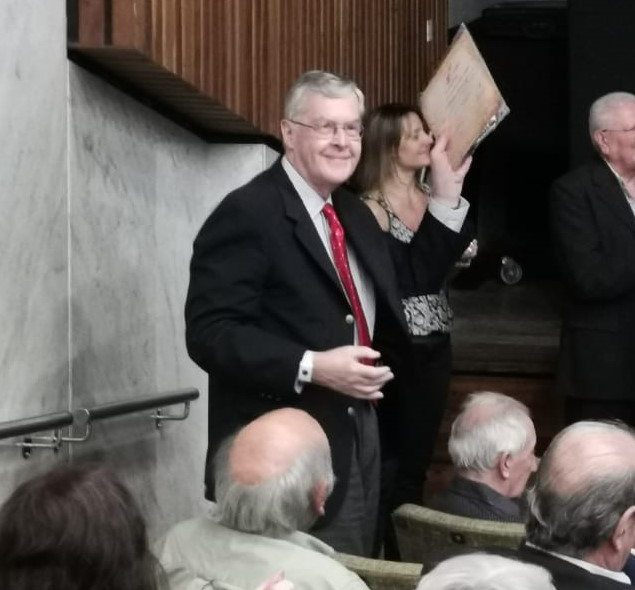

{% extends 'blog/master.html' %}
{% block content %}
Hola, deja que te cuente un poco sobre mi
Mi perfil
Mi nombre es José Davidow. Soy médico, graduado en la Facultad de Medicina de la Universidad Nacional de Rosario, especialista en Clínica Médica (Medicina Interna) y Terapia Intensiva. Docente de Medicina Interna en la Universidad Nacional de Rosario, durante muchos años. Formador de Residentes de Clínica Médica. Jefe de una Sala de Terapia Intensiva durante 30 años.
Cuando estudiante fui ayudante de cátedra en Histología, luego Instructor en la misma Cátedra. Participé en varios trabajos de investigación básica. Fue mi experiencia en la produccion científica de laboratorio.
He presidido la Asociación de Medicina Interna de Rosario y la Asociación de Terapia Intensiva de Rosario. Miembro fundador de la Sociedad Argentina de Terapia Intensiva. He participado con ponencias, actuado como panelista y presidido Congresos de Medicina Interna y de Terapia Intensiva.
Todos los años de médico los he pasado y sigo haciéndolo, al lado de los enfermos. Ahora dedico mi tiempo casi exclusivamente al Consultorio. Antes muchas horas en el Consultorio, el Hospital y la Sala de Terapia Intensiva.
En los primeros años de mi ejercicio los internistas veíamos y tratábamos pacientes que hoy tratan especialistas. La tarea diaria incluía el lupus, las leucemias, las glomerulonefritis, la insuficiencia cardíaca, el EPOC, la fiebre prolongada, la endocarditis, las infecciones de todo tipo y muchas otras. Hacíamos el diagnóstico y conducíamos los tratamientos, no había muchos especialistas y su papel era limitado. Los médicos en formación estudiaban Medicina Interna. La Cátedra de Medicina Interna englobaba todas las subespecialidades. Las que hoy tienen sus cátedras. Los clínicos desarrollaban enorme experiencia.
Nuestra formación se centraba en las lecturas de los textos clásicos como la Medicina Interna de Harrison, la de Cecil, mucho después la de Farreras, cuyas nuevas ediciones se esperaban con ansiedad. Y la llegada en papel del New England of Medicine, Lancet, JAMA, Annals of Internal Medicine, British Medical Journal y otras. Cursos y Congresos.
Épocas lejanas en las que, increíblemente, para los jóvenes, no había Internet. La biblioteca de la facultad de Medicina y la del Círculo Médico compraban las revistas extranjeras, años si, años no, según los avatares de la economía Argentina.
Tengo en la actualidad, retirado de la Terapia Intensiva, dedicado principalmente al consultorio; más horas libres, que me permiten leer lo nuevo en medicina y leer sobre las cosas que me interesan.
De ellas trata este blog, de las cosas que me interesan. Tratando de hacer llegar información que suele no ser destacada. Expreso opiniones que no son siempre ciertas. Opiniones a veces efímeras, sostenidas por lo que parece ser cierto hoy. Sobre muchos temas solo podemos tener opiniones, (doxa, versus episteme), después de sopesar la información, siempre cambiante. Información que seguramente se aproxima a la verdad, muy lentamente en idas y venidas.
Me preocupan muchas cosas de la Medicina actual. Lo cierto y lo incierto. La circunstancia de que lo que creemos cierto termina en pocos años en ser falso, a veces catastróficamente falso.
Me preocupan las influencias que determinan la falsedad de muchas publicaciones. Dejando de lado el simple fraude, lamentablemente frecuente, sino más bien ciertas influencias, que han tomado ya la forma de sistémicas. (1.2.3)
Me preocupa y me asombra el surgimiento de la anticiencia en general y en medicina en particular, la magia rediviva. La aceptación de teorías médicas absurdas, el “terraplanismo médico”, el peligroso movimiento antivacunas.
Interesado en la Medicina de la Longevidad, la Biogerontologia. Intento, entre otras, trasmitir novedades al respecto. He participado con ponencias sobre mecanismos del envejecimiento en Congresos.
Soy viudo, padre de 4 hijos, 2 de ellos médicos. Uno que hace Medicina Interna y Terapia Intensiva, una hija Neuróloga, una Abogada y una Contadora. Además abuelo de 7 nietos. Leo libros de ciencia y de historia. Lector de Borges, encuentro que se lo puede releer asiduamente. Hace años que no leo novelas. No practico deportes, de joven estuve un tiempo en el judo, sin éxito. También en el tenis, igual. Actualmente voy a un gimnasio, casi todos los días, camino en la cinta y luego hago pesas.
1. Smith R. The trouble with medical journals. J R Soc Med. 2006;99(3):115–119. doi:10.1258/jrsm.99.3.115.
2. Ioannidis, John. (2018). Professional Societies Should Abstain From Authorship of Guidelines and Disease Definition Statements.Circ Cardiovasc Qual Outcomes. 2018 Oct; 11(10):e004889.
3. Ioannidis JP. The Mass Production of Redundant, Misleading, and Conflicted Systematic Reviews and Meta-analyses. Milbank Q. 2016; 94(3):485–514

{% endblock %}